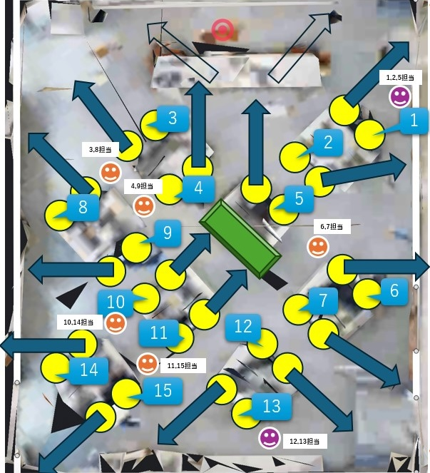

Copyright © 2026 Hiroya Kubo. All rights reserved.
2026年7月28日更新
この資料は、2026年8月1日に実施する親子AIプログラミング体験会の準備と運営に必要な情報をスタッフ向けにまとめたものです。
「3号館3F 325教室」

USBカメラの死角となる場所に、😃マークで教員2名と学生スタッフ5名、計7名分の立ち位置を記入しています。原則としてこの位置で待機し、ポーズ撮影やAI紙芝居のプレイを妨げないようにしてください。サポートのために移動する場合も、参加者やほかのスタッフの邪魔にならないように注意してください。
あわせて、😃マークの位置に、各スタッフが担当する親子ペア番号の目安を記入しています。紫色の1・2・5番は久保、12・13番は長尾先生、それ以外は学生スタッフが担当します。
| 時間 | 所要時間 | 章 | 内容・主な作業 | 進行のポイント・詳細 |
|---|---|---|---|---|
| 10:00 - 10:05 | 5分 | 0. この教材と体験会について | 体験会のねらい・学ぶこと・事前確認事項の共有 | 全体の流れと注意事項（カメラ使用、生成AIの注意点など）を伝え、ワクワク感を醸成します。 |
| 10:05 - 10:20 | 15分 | 1. はじめに | 機器準備、「参加型」AI紙芝居の体験（3〜5分）、仕組み解説 | 実際にAI紙芝居を3〜5分体験してもらい、作品の完成イメージと仕組み（カメラ認識・AI連動）を提示します。 |
| 10:20 - 10:50 | 30分 | 2. AIに乙姫様を描いてもらおう | 棒人間作成、生成AI（Copilot）での画像生成、画像整理 | 手描きやPCでポーズの棒人間を作成し、プロンプトを入力して立ち絵画像を生成します。生成された画像ファイルを整理・保存します。 |
| 10:50 - 10:55 | 5分 | 3. ポーズ画像を登録しよう | TurboWarp起動、コスチューム登録、表示確認 | TurboWarp環境を起動し、作成した画像をキャラクターのコスチュームとしてドラッグ＆ドロップで登録します。 |
| 10:55 - 11:05 | 10分 | 4. 休憩しよう | 休憩・集中力の切り替え | 前半のパソコン作業の疲れをリセットし、後半の機械学習と設定作業に向け集中力を高めます。 |
| 11:05 - 11:25 | 20分 | 5. ポーズを認識するしくみを作ろう | Teachable Machineでのポーズ撮影、学習・エクスポート | Webカメラを使って自分のポーズを撮影・学習させ、ポーズ認識用の機械学習モデル（URL）を作成します。 |
| 11:25 - 11:35 | 10分 | 6. 台本ファイルの修正をしよう | 台本ファイルの編集、URL・アセット設定、保存 | 設定用テキストファイルを開き、作成したモデルのURLやポーズ設定情報を記述して保存します。個別の入力フォローを行います。 |
| 11:35 - 11:50 | 15分 | 7. 動作確認しよう 8. まとめ |
アプリ起動・ポーズ認識テスト、作品共有・振り返り・アンケート | 実際にポーズをとって紙芝居が動くかテストします。完成した作品を周りと見せ合い、振り返り・片付け・アンケート説明をして終了します。 |
参加者の画面を確認し、作業がうまく進んでいない場合は優しく声をかけ、スタッフが対応することを伝えてください。
Microsoft側のトラブルにより、Copilotでの画像作成が正常に動作しないことがあります。最初は動作していても、1〜2枚の画像を生成した後に動かなくなる場合があります。 もしそうなった場合には、保護者がUSBメモリを持参しているかどうか確認し、持っている場合と持っていない場合に分け、次のように対応してください。
生成AI利用を親側の端末で実施します。
上記の作業がうまくいかない場合には、「7.1.2 USBメモリを持っていない場合」の手順に従ってください。
USBメモリを持っていない場合や、作業がうまくいかない場合は、「2.3 生成AIでポーズの絵を描く」の作業を省略します。
Teachable Machineで「長押しして録画」ボタンを押す段階になったら、「モデル（ポーズを取る役：子ども）」と「オペレーター（撮影ボタンを押す役：保護者）」に分かれて作業するように声をかけてください。 液晶ディスプレイの向きを変え、カメラの角度を調整し、カメラの映像に子どもの全身が映るようにしてください。全身が映らない場合は、上半身だけでもかまいません。 カメラに、他の親子が映らないようにしてください。モデルの人には、ポーズを取る際に、足元の段差などに注意すること、壁や机にぶつからないようにすることなど、周囲の安全を確認してもらうように声かけをしてください。
テキストファイル内の「#」の消し忘れや、記号の誤削除が発生しやすい作業です。画面に具体例を示しながら一歩ずつ進め、巡回スタッフがフォローに入ってください。